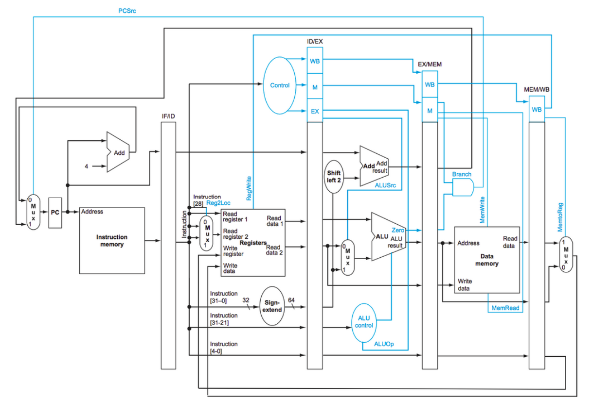

5-Stage Pipelined ARM CPU
A 64-bit ARM LEGv8 Processor in VHDL
Through this project I moved from seeing computers as magical machines to understanding and recreating their inner logic, building everything from instruction decoding and ALU control to handling data hazards, branching, and multi-stage signal propagation—all while strengthening my VHDL skills.
Project Summary
Designed and implemented a fully functional 64-bit ARM LEGv8 processor, first as a single-cycle CPU and later as a 5-stage pipelined architecture in VHDL. The processor supports R-type, I-type, D-type, and branch instructions, complete with data forwarding to minimize stalls and hazard detection for load-use dependencies. Verified through extensive testbenches using GHDL simulation and GTKWave waveform analysis.
Pipeline Architecture

5-stage pipeline architecture with pipeline registers between each stage
The diagram shows the five stages connected in a pipeline, with pipeline registers (IF/ID, ID/EX, EX/MEM, MEM/WB) between them. These registers hold all necessary values (operands, control signals, immediates, addresses) so each stage can operate independently on a different instruction each clock cycle, allowing for higher instruction throughput.
| Stage | Name | Function |
|---|---|---|
| IF | Instruction Fetch | Fetch instruction from IMEM using PC |
| ID | Instruction Decode | Decode opcode, read registers, sign-extend immediates |
| EX | Execute | ALU operations, branch address calculation |
| MEM | Memory Access | Load/store data from/to DMEM |
| WB | Write Back | Write results back to register file |
Forwarding & Hazard Detection
One of the biggest challenges in pipelined processors is handling data hazards: when an instruction depends on the result of a previous instruction still in the pipeline.
Data Forwarding
Implemented forwarding paths to bypass results directly:
- EX/MEM → EX: Forward ALU result to next instruction
- MEM/WB → EX: Forward memory/ALU result
- Store Forwarding: Special path for STUR instructions
Hazard Detection
Load-use hazards require stalling since the data isn't ready yet:
- Detect: LDUR followed by dependent instruction
- Stall: Freeze PC and IF/ID register
- Bubble: Zero out control signals in ID/EX
Branch Handling
The processor supports conditional branches (CBZ, CBNZ) and unconditional branches (B). When a branch is taken, PCSrc selects the branch target address calculated in the EX stage.
Supported Instructions
| Type | Instructions | Description |
|---|---|---|
| R-Type | ADD, SUB, AND, ORR | Register to register arithmetic/logic |
| I-Type | ADDI, SUBI, ANDI, ORRI, LSL, LSR | Immediate arithmetic/logic and shifts |
| D-Type | LDUR, STUR | Load/store with offset addressing |
| Branch | B, CBZ, CBNZ | Unconditional and conditional branches |
Verification & Testing
I verified the CPU by writing countless testbenches, using GHDL to simulate the VHDL design and GTKWave to inspect internal signals individually. This let me trace each instruction as it moved through the pipeline, confirm register writes and memory accesses, and observe real data/control hazards, providing full visibility into the processor's behavior.

GTKWave Signal Viewer
Key Takeaway
Simple Components → Powerful System
I learned that all of the individual components of the CPU are relatively simple, but when combined together they can become very powerful. Understanding this, seeing how multiplexers, adders, registers, and control logic work in harmony, demystified how computers actually work at the hardware level.